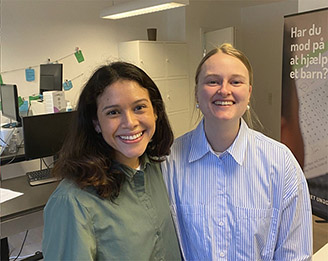
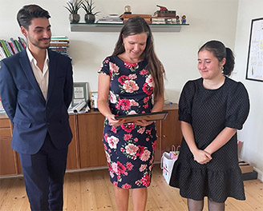

D. 4. november 2023 afholder Red Barnet Ungdom landsmøde for organisations medlemmer. Det bliver en sjov og hyggelige dag, der slutter med et brag …
Red Barnet Ungdom søger praktikanter for foråret 2024 - både til vores programafdeling og vores kommunikationsafdeling.
Formand Serkan Kilavuz og næstforkvinde Aleyna Kocak i Køge, var den 28/9 en tur på Borgmesterens Kontor …